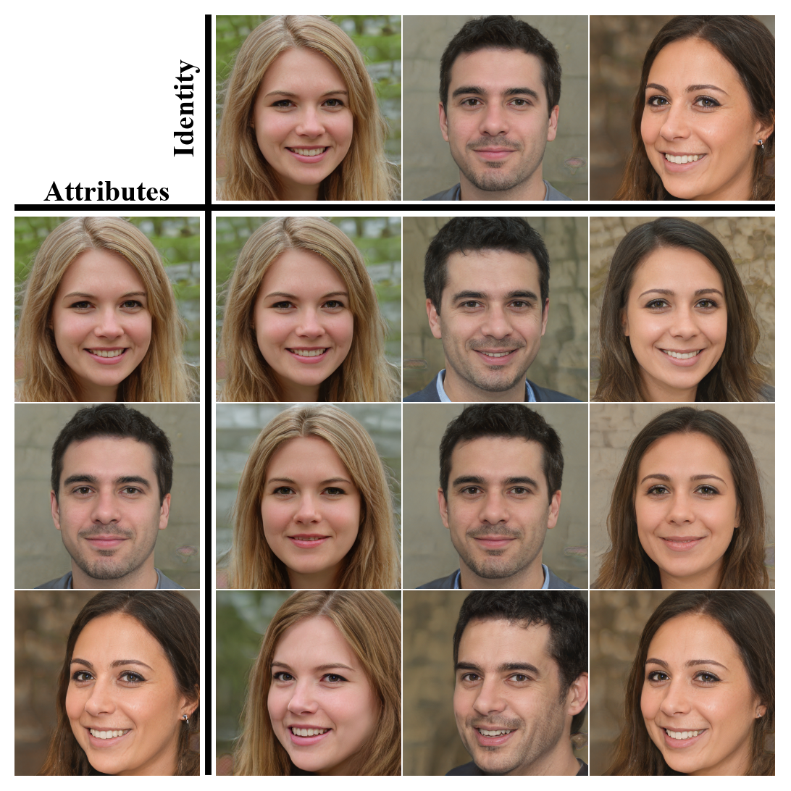
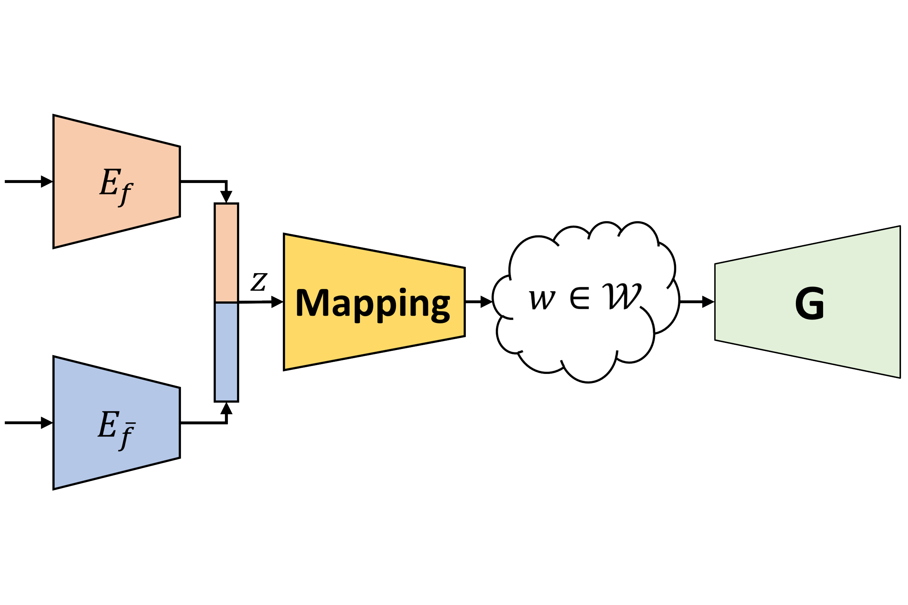
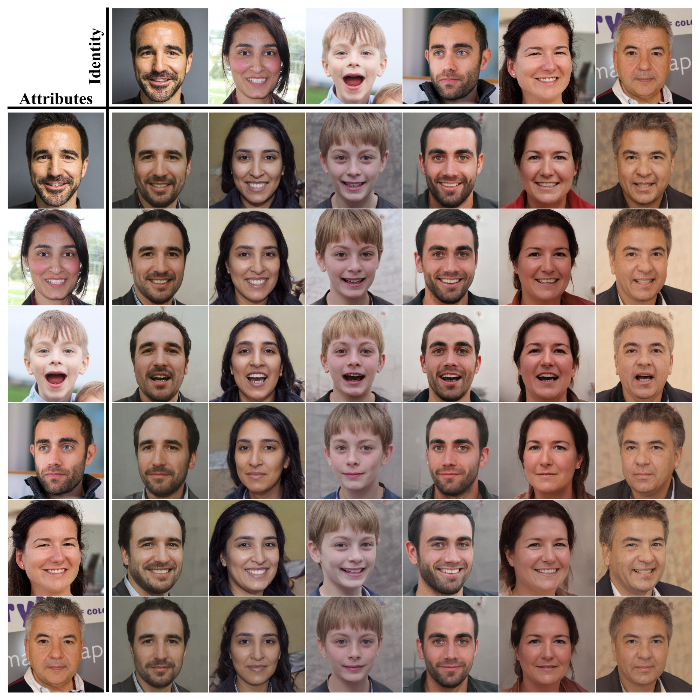
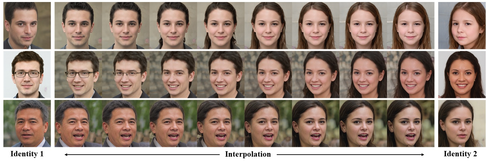

Face Identity Disentanglement via Latent Space Mapping
SIGGRAPH ASIA 2020

Abstract
Learning disentangled representations of data is a fundamental problem in artificial intelligence. Specifically, disentangled latent representations allow generative models to control and compose the disentangled factors in the synthesis process. Current methods, however, require extensive supervision and training, or instead, noticeably compromise quality. In this paper, we present a method that learns how to represent data in a disentangled way, with minimal supervision, manifested solely using available pre-trained networks. Our key insight is to decouple the processes of disentanglement and synthesis, by employing a leading pre-trained unconditional image generator, such as StyleGAN. By learning to map into its latent space, we leverage both its state-of-the-art quality, and its rich and expressive latent space, without the burden of training it. We demonstrate our approach on the complex and high dimensional domain of human heads. We evaluate our method qualitatively and quantitatively, and exhibit its success with de-identification operations and with temporal identity coherency in image sequences. Through extensive experimentation, we show that our method successfully disentangles identity from other facial attributes, surpassing existing methods, even though they require more training and supervision.motivation
learning disentangled representations and image synthesis are different tasks. however, it is a common practice to solve both simultaneously. this way, the image generator learns the semantics of the representations. now it is able to take multiple representations from different sources and mix them to generate novel images. but this comes at a price, one now needs to solve two difficult tasks simultaneously. this often causes the need to devise dedicated architectures and even then, achieve sub-optimal visual quality.we propose a different approach. unconditional generators have recently achieved amazing image quality. we take advantage of this fact, and avoid solving this task ourselves. instead, we suggest to use a pretrained generator, such as stylegan. but now, how can the generator, which is pretrained & unconditional, make sense of the disentangled representations?
we suggest mapping the disentangled representations directly into the latent space of the generator. the mapping produces in a single feed-forward a new, never before seen, latent code that corresponds to novel images.

Composition Results
We demonstrate our method on the domain of human faces - specifically disentangling identity from all other attributes.In the following tables the identity is taken from the image on top and the attributes are taken from the left most image. In this figure, the inputs themselves are StyleGAN generated images.


Disentangled Interpolation
Thanks to our disentangled representations, we are able to interpolate only a single feature (identity or attributes) in the generator's latent space. This enables more control and opens the door for new disentangled editing capabilities.

Contact
yotamnitzan at gmail dot com